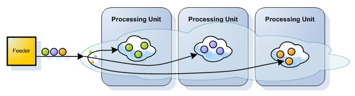

Smart Cache is
Smart Cache provides a highly-reliable, distributed, in-memory storage and processing engine. Essentially, it is an in-memory data grid designed to support millisecond-level latency and millions of operations per second, providing for thousands of deployed services, and hundreds to thousands of concurrent users. This solution makes the implementation of distributed applications above the Space simpler and less intrusive, enabling efficient building of highly scalable and highly performing applications.
Smart Cache offers:
High availability, replication and persistence with optional data persistence and multi-datacenter replication
Full data life-cycle management on RAM, SSD/Flash, disk and external data stores, also supporting multiple data tiers
Supports an unlimited number of advanced indexes such as Exact, Range, Collections, Compound, Text, and Geo-spatial for optimal performance, with full SQL compliance. Unlike key-value stores that may need to duplicate the entire data store for each defined index, Smart Cache only creates additional indexing data structures on one instance of data.
Supports a variety of data models, including POJO, Documents, and Key/Value
Seamlessly scales up and out with no downtime
Can be deployed on-premises, in the cloud, or in a hybrid environment, including Kubernetes and OpenShift, or use its own service grid orchestration mechanism
Easily integrates with BI tools such as Tableau, Looker, and PowerBI
Architecture of Smart Cache
Smart Cache runs server side processing, providing the high performance of advanced operations and avoiding data retrieval back to the client side. Aggregation is performed in-memory, on relevant data only, regardless of total data size. It uses Space-Based Architecture (SBA) as a primary design pattern. With SBA, applications are built out of a set of self-sufficient units, known as Processing Units (PU). These units are completely independent of each other, so that an application can scale without increasing complexity, just by adding more units. SBA is based on the Tuple Space paradigm. SBA follows many of the principles of Service-Oriented Architecture and Event-Driven Architecture, as well as elements of grid computing.
When the objects are written to the Data Grid, they are routed to the proper partition, according to a predefined attribute in the object that acts as the routing index.

The data grid also functions as an application server that enables applications running on the data grid to be scaled out linearly, using Space-Based Architecture (SBA) as a primary design pattern.
With SBA, applications are built out of a set of self-sufficient units, known as Processing Units (PU). These units are completely independent of each other, so that the application can scale indefinitely without increasing complexity, just by adding more units. SBA is based on the Tuple Space paradigm. SBA follows many of the principles of Service-Oriented Architecture and Event-Driven Architecture, as well as elements of grid computing.
Smart Cache provides a powerful solution for launching and running digital services. Its APIs support ultra-fast transaction processing and task execution that is event driven, offering high availability, reliability and scale. Smart Cache’s server side processing accelerates performance and reduces networking and serialization overhead, even during peaks with high numbers of concurrent users. The platform supports both Kubernetes and alternative elastic orchestration systems.
Smart Cache offers efficient and cost-effective data replication across regions and clouds, and between cloud and on-premises deployments. It supports both polling and push notifications, including FIFO and FIFO grouping ordering. Business rules can also be applied locally and remotely as they are embedded in each partition and on remote nodes.
More Smart Cache Overview Topics: